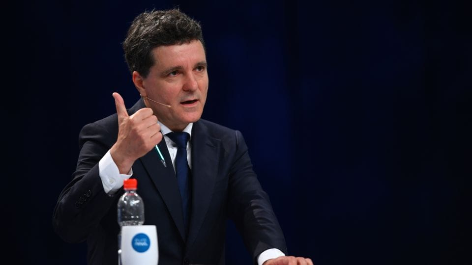

世界苦茶05月16日新闻 | 53条 | 欧盟裁定TikTok广告违规

欧盟裁定TikTok广告违规 | 中国对拉美五国免签 | 官方通报肖飞动袭莹事件 | 中国主张做大国内大循环 | 柴静似乎被彻底封杀 | 普京解雇陆军总司令
三个水枪手
苦茶数据
美元兑人民币：7.20（昨日7.20，前日7.21）
美元兑日元：145.28（昨日146.04，前日147.15）
上证指数：3367（昨日3389，前日3372）
标普500指数：5916（昨日5892，前日5886）
比特币：103609（昨日102921，前日103710）
布伦特原油：64.50（昨日64.69，前日66.33）
中国新闻
• 国务院5月15日开“做强国内大循环”工作推进会。发改委、商务部、浙赣甘省政府发言。李强讲话： 大循环要供给和需求动态平衡，加快补齐消费短板，经济政策着力点更多转向惠民生、促消费，以消费升级引领产业升级，以优质供给更好满足需求。精准有效帮扶外贸企业，切实帮助解决实际困难。千方百计稳定就业，支持企业稳岗，扩大各领域特别是服务业就业，突出解决高校毕业生、农民工等就业。
• 官方通报医生出轨事件，肖飞和董袭莹均被处分 ：针对中国知名医院中日友好医院曝出的医生婚内出轨事件，中国官方在调查后通报，涉事的原胸外科副主任医师肖飞因手术过程中擅自离开手术室等，被吊销医师执业证书；规培住院医师董袭莹则因入学资格造假和伪造学分等，被撤销四项证书。据央视新闻报道，中国国家卫生健康委星期四通报有关上述事件调查处置进展情况。针对肖飞的问题，通报称，肖飞2024年7月在为患者行胸腔镜下肺叶切除术时，作为此例手术的主要负责人和主刀医生，违反手术安全管理制度，并与巡回护士发生争执，在患者已进入麻醉状态下中断手术进程，擅自离开手术室并带走手术助手。
• 港人赴阿联酋免签 ：香港特首李家超访问中东后宣布，香港护照持有者星期四起可免签证前往阿联酋旅游，最长可逗留30天。据港府新闻公报，在中东进行访问的李家超星期三在科威特总结中东之行的成果时宣布上述消息，并称阿曼也将从星期四开始延长香港护照持有者免签入境的期限，由最长10天增加至14天。李家超说，目前香港护照持有者赴海湾阿拉伯国家合作委员会的六个成员国，都可享有免签或者落地签的安排，并指将进一步促进香港和海合会旅游、教育、文化、经贸等等的往来。
• 广州南站持刀伤人 ：中国官方通报，一名男子星期四在广州南站持刀伤人，造成一人受伤。广州铁路公安局广州公安处官方微博星期四发布警情通报称，广州南站一楼西北区当天下午2时许发生一起持水果刀伤人案件。通报称，民警及时到场处置，将35岁的李姓犯罪嫌疑人当场控制。案件造成一人受伤，伤者已及时送医救治，无生命危险。目前，案件正在进一步侦办中。
• 中对拉美五国免签 ：中国将从6月1日起，对巴西、阿根廷、智利、秘鲁、乌拉圭等五国试行免签政策。中国外交部发言人林剑星期四在例行记者会上介绍，为进一步便利中外人员往来，中方决定扩大免签国家范围，自2025年6月1日起至2026年5月31日，对巴西、阿根廷、智利、秘鲁、乌拉圭持普通护照人员试行免签政策。上述五国持普通护照人员到中国经商、旅游观光、探亲访友、交流访问、过境不超过30天，可免办签证入境。
• 习近平强调党风建设 ：中共中央机关刊物《求是》杂志刊发中共总书记习近平讲话，强调党风问题关系执政党的生死存亡，对享乐主义、奢靡之风等歪风陋习要露头就打，以优良党风引领社风民风。据央视新闻客户端报道，将于星期五出版的第10期《求是》杂志将发表习近平文章《锲而不舍落实中央八项规定精神，以优良党风引领社风民风》。这是习近平2012年12月至2025年3月期间有关论述的节录。文章强调，党风问题关系执政党的生死存亡，作风建设关系中共能不能长期执政、履行好执政使命。中共十八大以来，中央政治局带头改进作风，严格执行中央八项规定，就是要以实际行动给全党改进作风作好表率。各级领导干部要以上率下，自上而下，一级带一级，一级做给一级看，自觉起示范带头作用。
• 乐高园实名制禁倒票 ：上海乐高乐园即将开业，网上出现了公开售卖的试运营门票，乐园发布声明称，试运营门票严格实行实名制，倒票将被追责。上海乐高乐园度假区星期三发布《关于上海乐高乐园试运营门票严格实行实名制的郑重声明》。声明称，上海乐高乐园试运营阶段赠送的门票仅限开园限量年卡持有人和开园限量酒店套餐入住人本人使用，不对公众售卖。目前市场上流通的所谓“体验票”“内部票”“预售票”均为非法渠道获取，游客通过非官方途径购买此类门票，将面临无法入园、资金损失等风险。
• 鄂州女司机撞人被拘 ：中国湖北鄂州发生汽车冲撞行人事件，造成一死两伤，58岁的女司机被刑事拘留。鄂州公安局交通管理支队星期四发布警情通报称，星期一早上7时58分，58岁的刘姓女司机驾驶一小型汽车行驶至鄂州市滨湖东路时，因操作不当驶入非机动车道，造成一人死亡两人受伤。刘姓司机当场被公安机关控制，受伤人员被及时送医治疗。当天，刘姓司机因涉嫌交通肇事罪被依法刑事拘留，经检测排除酒驾毒驾。事故在进一步调查处理中。
• 干部违规饮酒致死 ：河南五名干部学习教育期间违规吃喝饮酒导致一人死亡，中国官媒评论称，对违规宴饮等问题，要坚决露头就打。人民网星期四发表评论文章称，这是一起违规吃喝的典型案例，发生在开展深入贯彻中央八项规定精神学习教育之际。相关人员目无法纪、顶风违纪，性质极为严重，影响极为恶劣。对此，广大中共党员干部应引以为戒、警钟长鸣。文章称，中央八项规定是铁规矩、硬杠杠。顶风干、搞变通，反映出一些干部政治意识极其淡薄，毫无敬畏之心、戒惧之心。面对这类问题，必须坚持零容忍，只要露头就要严查快处，坚决扼杀不正之风。
• 中英科技交流遭干扰 ：中国驻英国大使郑泽光批评，英国国内总有一些人用老眼光看待中国，抱持意识形态偏见，阻挠干扰中英科技交流。据中国驻英国大使馆官网，当地时间星期三，郑泽光应邀出席2025中英企业家论坛并发表题为“坚持开放合作，促进交流互鉴”的主旨演讲。郑泽光说，中英开展交流合作，关键要纠正一些人的对华错误认知，排除政治干扰和阻力。英国国内总有一些人用老眼光看待中国，抱持意识形态偏见、泛化“国家安全”概念，阻挠干扰中英科技交流。事实上，中英都拥有雄厚的科技实力，在科技领域各有优势，完全可以交流互鉴，从交流合作中获益。他并列举两国学者合著论文以及中国将嫦娥五号带回的月壤样品借用给英国科学家等实例，指出双方应该以自信、开放的心态，开展更多双向、互利合作。
• 台查欧阳娜娜赴陆合作 ：台湾陆委会调查赴陆发展的台湾艺人与中共的合作，欧阳娜娜被列为重要的行政查察对象。综合联合新闻网和《上报》报道，台陆委会主委邱垂正星期三接受节目《中午来开汇》主持人黄光芹专访。被问及是否会对赴陆发展的艺人展开调查，邱垂正说，政府尊重艺人赴陆发展的自由，但这些艺人往往会受到中国大陆媒体或当局的要求，在特定时间点进行政治表态。
• 杨恒均狱中写信求援 ：被中国监禁的澳大利亚籍华裔作家杨恒均在一封致澳洲总理阿尔巴尼斯的信中，以“难以忍受”形容他在狱中经历的苦难，并表示他仍梦想有朝一日能够回家。综合法新社和澳洲广播电台报道，这封信写于今年1月10日，直到本星期才由媒体公布。杨恒均在信中感谢澳洲政府为争取他获释积极斡旋，并表示澳洲人民的支持为他带来关爱与安慰，“使我能够承受那些难以启齿、也难以忍受的苦难”。
• 台不鼓励赴陆交流 ：台湾教育部长郑英耀称，台湾学生开展国际交流是好事，但现阶段“不鼓励、甚至是禁止与反对”台湾学生到中国大陆交流。综合台湾《联合报》《自由时报》和民视新闻网报道，郑英耀星期三出席一场活动时说，教育部支持学生参与国际交流，因为这有助于拓展视野。但若要增加国际经验，现阶段可优先考虑欧美、东北亚或东南亚国家。他指出，当前两岸情势紧张，陆委会已发布橙色旅游警示，提醒台湾民众前往中国大陆旅游与交流存在风险，因此现阶段“不鼓励，甚至是禁止与反对”大学及中小学学生到中国大陆交流。
• 柴静《看见》被下架 ：柴静2013年自传《看见》因“图书质量问题”被勒令停止出版发行，北京贝贝特（广西师大出版社）5月15日发出《图书下架通知》。柴静2014年离开央视，2015年拍摄纪录片《穹顶之下》获时任环保部长陈吉宁感谢。2023年起在YouTube独立制播访谈。2011年9月，她曾赴台湾访问国共内战老兵高秉涵，次年播出后，高秉涵获评为“感动中国”年度人物。2025年，90岁的高秉涵主动联系她再做访谈，影片5月10日发布。
亚太印太新闻
• 韩前总统被劝退党 ：韩国大选6月登场，执政国民力量党临时领导人金龙泰说，他将尽快建议前总统尹锡悦退党。韩联社报道，国民力量党新任紧急对策委员会委员长（临时领导人）金龙泰星期四在国会举行就职记者会。他表明，会尽快与尹锡悦会面，并郑重建议尹锡悦退党，为大选胜利作出决断。尹锡悦去年12月3日突然宣布戒严，引发政治风暴，国会对他发起弹劾。韩国宪法法院4月4日宣布通过对尹锡悦的弹劾，尹锡悦即刻被罢免总统职务。
• 曼谷审计楼坍塌追责 ：泰国法院对曼谷审计署大楼坍塌事故的17名涉案人员签发逮捕令。法新社报道，曼谷警察部队首长暹星期四说，泰国法院当天对涉国家审计署在建大楼坍塌事故的三个团体、共17人签发逮捕令。缅甸3月28日发生里氏7.7级强震，曼谷震感明显，30层高的国家审计署大楼倒塌，是这次地震中曼谷唯一坍塌的建筑，引发人们对建筑质量的质疑。
• 澳总理首访印尼 ：澳大利亚总理阿尔巴尼斯星期四抵达雅加达，将与印度尼西亚总统普拉博沃举行会面，讨论国防合作和全球贸易问题。这是阿尔巴尼斯连任以来的首次出访。阿尔巴尼斯说，这次访问表明澳洲重视与印尼的国防和经济关系。阿尔巴尼斯星期三在珀斯接受电台访问时说：“印尼对澳洲来说是一个重要的关系，这个位于我们北方的邻国，到下一个10年末将成长为世界第五大经济体。”
• 澳印尼深化防务合作 ：澳大利亚总理阿尔巴尼斯访问印度尼西亚，强调双方在国防领域的合作，并希望两国在去年8月达成防务协议的基础上进一步深化合作。法新社报道，阿尔巴尼斯星期四访问雅加达，这是他在5月3日澳洲联邦选举中赢得连任后的首次出访。他在与印尼总统普拉博沃共同举行的记者会上说，澳洲寻求在去年8月与印尼签署的国防合作协议基础上，进一步深化合作。澳洲和印尼在这项具有里程碑意义的防务协议中承诺加强地区合作，协议条款包括联合演习，以及在对方国家部署部队。
• 印吁监督巴核武库 ：印度国防部长辛格说，巴基斯坦的核武库应接受国际原子能机构的监督。法新社报道，辛格星期四在印控克什米尔地区查谟—克什米尔的夏季首府斯利那加向印度官兵发表讲话。他表明：“我希望向世界提出这个问题……巴基斯坦的核武库是否安全？巴基斯坦的核武库应置于国际原子能机构的监督之下。”印度和巴基斯坦都是拥核国家。印控克什米尔地区4月22日发生致命恐袭，新德里指责伊斯兰堡策划袭击，但后者否认。
• 日本拟从2026年4月起全面覆盖分娩费用： 为了应对出生率持续下降的问题，日本厚生劳动省计划最早从明年4月起，取消分娩相关的个人自付费用。根据周三专家委员会通过的政策建议之一，日本将考虑通过公共医疗保险制度，全面覆盖正常分娩的相关费用。
• 菲德签防务合作协议 ：南中国海局势紧张之际，菲律宾国防部星期四宣布，菲律宾防长特奥多罗和德国防长皮斯托里乌斯星期在柏林签署防务合作协议，同意扩大合作范围，包括网络安全、国防装备和后勤以及联合国维和行动。路透社报道，这项协议是在皮斯托里乌斯去年8月访问马尼拉后达成的，当时他和特奥多罗承诺加强两军之间的长期关系。皮斯托里乌斯是菲律宾和德国建交70年以来，首名访菲的德国防长。德国也是与菲律宾建立正式防务关系最久的国家之一，两国1974年通过行政协议，让菲律宾军队在德国受训。
• 赖清德回应核电延役 ：台湾在野党凭借多数优势延长核电厂使用年限后，身兼民进党主席的总统赖清德表示，将通过“更民主的方式”解决民主纷争，凝聚社会共识。综合台湾《中国时报》和TVBS新闻网报道，赖清德星期三在民进党中常会上说，台湾第三核能发电厂二号机的运转执照将在5月17日到期，而立法院星期二通过法案，将该厂使用年限由原本的40年延长至60年。但赖清德强调，核三厂二号机绝不可能在未经审核的情况下“直接延役”或“立刻重启”。
科技新闻
• 阿联酋建美最大AI园 ：阿拉伯联合酋长国与美国签署一项协议，将在这个波斯湾国家建设美国境外最大的人工智能园区。《纽约时报》报道，为重要石油生产国的阿联酋持续投入数以十亿美元计的资金，力争成为全球AI领域的参与者，这个占地约16公里的AI园区将有助于阿联酋成为AI新兴强国。美国总统特朗普星期四参观阿布扎比的一座新AI园区时宣布此消息。美国将为阿联酋的新AI园区供应美制AI晶片，为美国境外规模最大的此类项目。
• YouTube推出播客排行榜 乔·罗根位居榜首： YouTube现在有一个追踪美国排名前百名播客的排行榜。在5月5日至11日这一周，《乔·罗根体验》占据榜首位置，其后依次是《Kill Tony》、《Rotten Mango》、《48 Hours》。根据YouTube史蒂夫·麦克伦登的博客文章，平台将每周三更新排行榜，并根据观看时间对每个节目进行排名。排行榜将收录在上传过程中被创作者指定为 ‘播客’ 的播放列表，且不会收录仅含剪辑或Shorts的播放列表。
• 英德联合研发远程武器 ：英国政府星期四宣布，英国和德国将联合开发射程超过2000公里的新型“深度精确打击”武器。英国国防部长希利和德国国防部长皮斯托里乌斯，将在柏林举行的会议上宣布这项远程武器开发项目。英国和德国去年签署双边防御协议，承诺联合开发新武器，强调欧洲需要有能力抵御乌克兰战争的升级。
• Meta推迟AI模型发布 ：据知情人士透露，Meta公司正推迟发布一款旗舰AI模型。该公司工程师难以显著提升其“Behemoth”大语言模型的能力，这导致员工质疑其相较于先前版本的改进是否足以支持公开发布。在开发初期，“Behemoth”模型内部曾计划于四月发布，以配合Meta为开发者举办的首届AI大会。Meta在该活动前发布了其Llama AI模型系列中的两款较小模型，但后来将规模更大的“Behemoth”模型的内部发布目标推迟到六月。现在，该模型的发布时间已推迟到秋季或更晚。公司最终可能会决定提前发布“Behemoth”，包括推出功能更受限的版本。但Meta的工程师和研究人员担心其性能可能与公司对外宣称的能力不符。 （翻评：之前有个巨大丑闻，就是Meta的模型数据造假。）
• TikTok被指广告违规 ：欧盟委员会表示，字节跳动旗下TikTok可能违反了欧盟《数字服务法》中关于向用户提供广告信息的规定。欧盟委员会称，TikTok未能按规定在该公司必须提供的一个数据库中，就遵守相关规定所需的广告内容、广告的目标用户和广告付费方提供必要信息。官员们还表示，该公司所谓的广告库不允许公众使用这些信息全面搜索广告，从而限制了该广告库的实用性。官员表示：“我们初步认为，TikTok在该公司广告库的关键领域没有遵守数字服务法，这妨碍了对其广告和定向系统所带来风险的全面审查。”如果最终认定该公司违反了上述规定，可能会对其处以最高相当于其全球年营业额6%的罚款。
• 巴西第一夫人向习近平抱怨TikTok对儿童的影响： 巴西第一夫人罗桑热拉·达席尔瓦在北京的一次官方晚宴上，向中国领导人抱怨TikTok对妇女和儿童的潜在有害影响。巴西总统卢拉在北京对记者表示，他向习近平提出派遣中方官员访问巴西，以便双方讨论短视频分享应用TikTok和其他平台的监管后，她提出了这个问题。他否认当地媒体关于第一夫人贾妮娅此举让习近平感到不适的报道。习近平是在卢拉对中国进行国事访问结束时主办的晚宴上接待他们的。“贾妮娅请求发言，以解释巴西在妇女和儿童问题上的现状。习近平主席表示，巴西有权制定法规，”卢拉在新闻发布会上说。“我们需要进行监管。”
• 马斯克谈机器人未来 ：马斯克日前在利雅得举行的沙特 - 美国投资论坛上表示，人形机器人的数量最终将达到数百亿，这将彻底改变全球经济格局。马斯克称当机器人承担大部分生产活动后，商品和服务将极大丰富，人类收入水平将普遍提升，甚至出现 “没有人想要任何东西” 的富足状态。马斯克透露，特斯拉计划通过供应链优化，在2027年将Optimus成本降至两万美元，这一价格临界点将加速机器人从“工业工具”向“家庭消费品”的转化。马斯克强调，未来每个人都将拥有类似星球大战中C-3PO或R2-D2的个性化机器人助手，这些“四轮机器人”和“人形劳动力”将推动全球经济规模成倍的扩张，实现“普遍高收入”。 （翻评：马斯克的众多科技卫星之一。）
财经新闻
• 沃尔玛预警将涨价 ：美国连锁零售集团沃尔玛在星期四盘前公布在上一季度取得稳健的销售和盈利增长，但发出警告，由于关税冲击和日益加剧的经济动荡，它预计将在本月开始提高部分商品价格。在截至4月底的季度，沃尔玛开业至少一年的商店销售额增长了4.5%，表现优于市场预期，反映它降低价格以赢得市场份额的决策带来正面作用。然而，沃尔玛无法幸免于美国总统特朗普广泛而激进的关税措施造成的冲击，关税战造成的价格上涨预计很快将影响沃尔玛商店货架上的产品。
• 特朗普希望苹果停止将手机生产转移至印度： 美国总统唐纳德·特朗普表示，他已要求苹果公司的蒂姆·库克停止在印度建厂，针对这家iPhone制造商在中国之外实现制造多元化的计划。“昨天我和蒂姆·库克有点小问题，”特朗普在卡塔尔进行国事访问期间谈及与这位苹果首席执行官的谈话时表示。“他正在印度各地建厂。我不希望你在印度建厂。”特朗普表示，作为他们讨论的结果，苹果将“提高在美国的产量”。特朗普指出，印度是世界上关税壁垒最高的国家之一，不过他表示，印度已提出降低对美国商品的关税，因为这个亚洲国家正在寻求就进口关税达成协议。
• 苹果向印度政府重申承诺，尽管特朗普表示不满： 尽管美国总统特朗普批评苹果在印度的制造计划，印度方面仍在淡化相关担忧。CNBC-TV18援引政府消息人士称，苹果已“向印度政府重申”，会继续将印度作为其产品制造的重要基地。消息人士表示：“苹果在印度的投资计划没有任何变化。”这表明尽管特朗普近日批评了苹果的印度战略，苹果仍将照常运营。
• 富士康印度建芯片厂 ：全球最大电子代工厂富士康已获得印度政府批准，将与HCL集团合资建设一座半导体工厂，投资额达 370.6亿卢比。印度信息技术部长阿什维尼·瓦什纳本周三在内阁简报会上表示，该工厂将建于印度北方邦，预计2027年投产。这座工厂将生产用于手机、笔记本电脑、汽车、个人电脑等消费电子产品的显示驱动芯片。该合资项目初期定位为半导体封装以及测试业务的大型工业设施。尽管如此，这笔交易仍是苹果公司将生产从中国转移出去并深化与印度联系的又一步骤。而就在几天前，苹果公司首席执行官蒂姆·库克表示，苹果应对中美贸易不确定性的方法之一是让印度承担更多制造和组装工作。
• 印对美商品免关税 ：美国总统特朗普说，印度在一项贸易协议方案中提议，对美国商品免征关税。路透社报道，特朗普星期四在卡塔尔首都多哈会见企业高管时，透露这一消息。他说：“在印度做生意非常困难，印方提出的协议基本上是说，愿意不对我们征收任何关税。”特朗普政府上星期五宣布，对主要贸易伙伴暂缓实施关税上调90天。新德里希望在此期间与美国达成贸易协议。
• 欧盟防中货低价涌入 ：中国与欧盟日益扩大的贸易顺差正引发新的担忧：在中美之间愈演愈烈的关税角力中，欧盟27国恐沦为中国廉价商品的替代市场。彭博社星期四报道，最新数据显示，今年前四个月，中国对欧盟的贸易顺差已攀升至900亿美元的历史新高。随着中国商品在进入美国市场时面临更高关税，欧洲官员正提高警惕，防止这些廉价商品大量涌入欧洲市场。目前法国、德国等国已着手加强边境检查、调整关税政策等，试图遏制中国低价商品大量流入对本地产业造成冲击。
• 星巴克拟售中国业务 ：美国咖啡连锁店星巴克据报将启动出售在华业务股份程序。彭博社引述要求不具名的知情人士报道，星巴克就涉及中国业务的选项进行考量，其中包括可能出售股权。星巴克已联系上私募股权公司、科技公司等等。知情人士称，星巴克本周通过一位财务顾问，向数位潜在投资者发出信函，就中国业务及发展形式征求他们的意见。若达成交易，这些资产的估值可能达到数十亿美元。
• APEC预警出口大减 ：亚太经济合作组织警告，受美国关税措施影响，亚太地区的出口今年几乎不会增长。APEC贸易部长星期四在韩国济州岛召开年度会议，会上发表的区域趋势分析报告显示，APEC预计本区域今年出口将仅增长0.4%，远低于去年的5.7%。报告也把今年的区域经济增长预期从此前的3.3%下调至2.6%。
• 巴西或发人民币债券 ：巴西据报正考虑首次在中国发行以人民币计价的主权债券，显示这个拉美最大经济体有意进一步深化与中国的经济合作。路透社星期四引述知情人士称，考虑到中国金融市场正不断扩大，发行熊猫债券是一个合理的选项。知情人士补充道，巴西财政部一向会评估在美元以外其他货币发行债券的机会。但这名知情人士说：“目前还很难说这一计划会几时落地——是今年、近期，还是更远的未来。”
• 中美贸易官员会面 ：韩国官员披露，中美贸易官员星期四在韩国首尔出席亚太经合组织会议期间举行会谈。据路透社报道，韩国贸易部长郑仁圭说，美国贸易代表格里尔星期四在出席亚太经合组织会议期间，与中国贸易代表、商务部副部长李成钢举行了会谈。
• 中美关税暂停运单激增 ：中美两国关税战暂停后，集装箱追踪软件提供商Vizion星期三提供的数据显示，从中国赴美的集装箱运输订单量飙升近300%。据路透社报道，Vizion战略业务发展副总裁特雷西指出，截至星期三的七天内，从中国运往美国的集装箱平均订单量飙升277%，从截至5月5日当周的5709个标准箱，跃升至2万1530个。美国总统特朗普4月2日宣布，计划对中国制造的商品加征145%关税后，美国进口商暂停与中国有关的运输事宜。
• 美未将汇率纳入协议 ：知情人士透露，美国官员在与全球各国进行贸易谈判时，并未寻求将汇率政策承诺纳入协议中。彭博社报道，美国财政部长贝森特是特朗普政府经济团队中唯一负责汇率事务的官员。据知情人士透露，贝森特并未授权其他美国官员在与贸易伙伴磋商时讨论汇率问题，且任何相关议题只有贝森特本人在场时才可谈判。美国财政部发言人对此拒绝置评。
俄乌战争
• 普京解除俄罗斯陆军总司令职务： “陆军上将奥列格·萨柳科夫被解除俄罗斯地面部队总司令职务，并被任命为俄罗斯安全委员会秘书绍伊古的副手。”
• 俄乌会谈推迟举行 ：俄罗斯说，应土耳其方面提议，俄乌在伊斯坦布尔的会谈推迟到当地时间星期四后半天举行。路透社报道，俄罗斯外交部发言人扎哈罗娃星期四宣布这一消息。她并未透露更详细的时间安排。不过，土耳其外交部一名消息人士称，俄乌会谈尚未确定时间，因此不存在推迟的问题，目前已有一个俄罗斯技术代表团和一些美国官员在伊斯坦布尔。
• 特朗普称和谈需见普京 ：美国总统特朗普说，在他与俄罗斯总统普京会面之前，俄乌和平谈判不会有任何进展。路透社报道，特朗普星期四乘搭美国总统专机“空军一号”抵达阿拉伯联合酋长国迪拜。他在飞机上告诉记者：“在普京和我会面之前，俄乌谈判不会有任何事发生。”俄罗斯和乌克兰代表团计划在土耳其伊斯坦布尔举行直接谈判，乌总统泽连斯基星期四早些时候已抵达土耳其首都安卡拉，与土总统埃尔多安会晤。
• 鲁比奥促俄乌谈判 ：美国国务卿鲁比奥说，华盛顿对俄乌和平进程缺乏进展已感到不耐烦，总统特朗普愿意考虑任何能够促成公正持久和平的机制。法新社报道，鲁比奥星期四在土耳其安塔利亚参加北约非正式外长会议时说，俄乌和平进程目前处于“非常困难的境地，我们希望能够找到向前迈进的步骤，通过谈判方式结束这场战争，并防止未来任何战争的发生”。他说：“因此，还有很多工作要做。我们仍然为此努力。显然，和其他人一样，我们感到不耐烦了，希望取得成果，但很困难。不过，希望很快就能在这里取得进展。”
• 波兰称乌入欧更可行 ：波兰外交部长西科尔斯基说，乌克兰加入欧盟比加入北约更加可行，欧盟能提供更好的安全保障。新华社消息，西科尔斯基星期三在波兰西部城市波兹南参加一个论坛活动时说，从来没有出现乌克兰加入北约的“现实前景”，对于乌克兰来说，可执行并可以实现的是欧洲一体化。他说，欧盟条约能比北约条约提供“更强大、更明确”的安全保障。西科尔斯基再次排除波兰向乌克兰派遣军队进行维和的可能性。他说，波兰与白俄罗斯和俄罗斯有650公里的边界，波兰的任务是保卫北约东翼，保证支持乌克兰维和任务的运输和通信畅通。
• 普京允查MH17事件 ：马来西亚首相安华说，俄罗斯总统普京表明莫斯科愿意配合，对马航MH17客机坠毁事件进行深入独立的调查。安华星期三在克里姆林宫与普京进行双边会晤时，提出马航MH17客机在乌克兰东部被导弹击落的事件。安华向随行访俄的马国媒体透露：“作为马来西亚人，尤其是遇难者家属的代表，我当然把握机会，向普京总统提出这个课题。”
其他新闻
• 伊朗或换解除裁减核 ：伊朗最高领袖哈梅内伊的顾问沙姆哈尼说，伊朗可能会接受对其核计划的广泛限制，以换取解除制裁。沙姆哈尼星期三接受美国全国广播公司访问时表明，伊朗愿意承诺永不制造核武器，销毁可用于制造武器的高浓缩铀储备，同意把铀浓缩至民用所需的低浓度，并允许国际核查人员对整个过程进行监督，以换取立即解除对伊朗的所有经济制裁。沙姆哈尼说，伊朗愿意与美国特朗普政府签署协议，但他批评特朗普一方面声称向伊朗伸出橄榄枝，另一方面又威胁伊朗若不接受协议，就会让伊朗的石油出口变成零。
• 以军空袭加沙82人亡 ：加沙民防部门说，以色列军方在加沙的袭击造成至少82人死亡。路透社报道，巴勒斯坦医务人员星期四说，以军当天对加沙发动空袭，导致至少60人丧生，大多数死者为妇女和儿童，都是在加沙南部汗尤尼斯的空袭中遇难，以军的轰炸击中当地的民宅和帐篷。加沙民防部门当天晚些时候告诉法新社，以军还对加沙北部的民宅发动袭击，加沙遇难者人数增至82人。
• 德或增军费至GDP5% ：德国外交部长瓦德富说，柏林愿意响应美国总统特朗普对北约的要求，将国防开支目标提高到国内生产总值的5%。法新社报道，瓦德富星期四在土耳其举行的北约外长非正式会议上说，北约秘书长吕特已经制定一项计划，希望达到特朗普认为必要的GDP5%国防目标，而德国“会在这一问题上跟随他的脚步”。北约领导人将于6月在荷兰海牙举行峰会，德国的这一表态，可能加大北约内其他欧洲盟友和加拿大就支出问题达成协议的压力。
• 美卡签2435亿美元协议 ：美国与卡塔尔星期三签署总值超过2435亿美元的多项协议，包括卡塔尔从美国购买波音客机和武装无人机等项目。美国总统特朗普星期三续程到卡塔尔访问，他这次的中东之行主要是要争取波斯湾国家的投资。白宫声明说，卡塔尔航空与美国签署总值960亿美元的合同，购买多达210架波音787“梦想客机”和777X客机、价值近20亿美元的MQ-9B武装无人机、价值约10亿美元的反无人机武器系统等。
• 特朗普因伊朗官员反对而放弃将“波斯湾”改名为“阿拉伯湾”的计划： 据CNN报道，美国前总统唐纳德·特朗普正在放弃将“波斯湾”更名为“阿拉伯湾”的计划，此前该提议遭到伊朗官员的强烈反对。特朗普于周二在沙特阿拉伯利雅得出席了沙美投资论坛，并在演讲中称伊朗政权是该地区“最具破坏性的混乱与恐怖的代理者”，指责其“挟持了数百万人的梦想”，并在叙利亚、黎巴嫩、加沙、伊拉克、也门等地“造成了难以想象的痛苦”。他还强调，与沙特所追求的“阿拉伯半岛发展路径”相比，“伊朗一侧的海湾正上演着灾难性的局面”。
• 民调显示布加勒斯特市长在罗马尼亚总统竞选中超越民族主义候选人： 据最新民调显示，支持欧盟的自由派布加勒斯特市长尼库索尔·丹首次在罗马尼亚总统选举中超越此前的民族主义领跑者。此次调查是在5月10日至13日由IRSOP民调机构进行的，结果显示丹获得52%支持率，领先民族主义候选人乔治·西米翁的48%。尽管在5月4日的首轮投票中，极右翼、反欧盟的西米翁曾以巨大优势胜出，但最新民调显示丹已成为最有可能当选罗马尼亚总统的人选。另一家机构AtlasIntel在5月13日公布的民调则显示，两人支持率各为48.2%，尽管在首轮投票中，西米翁曾领先丹20个百分点。